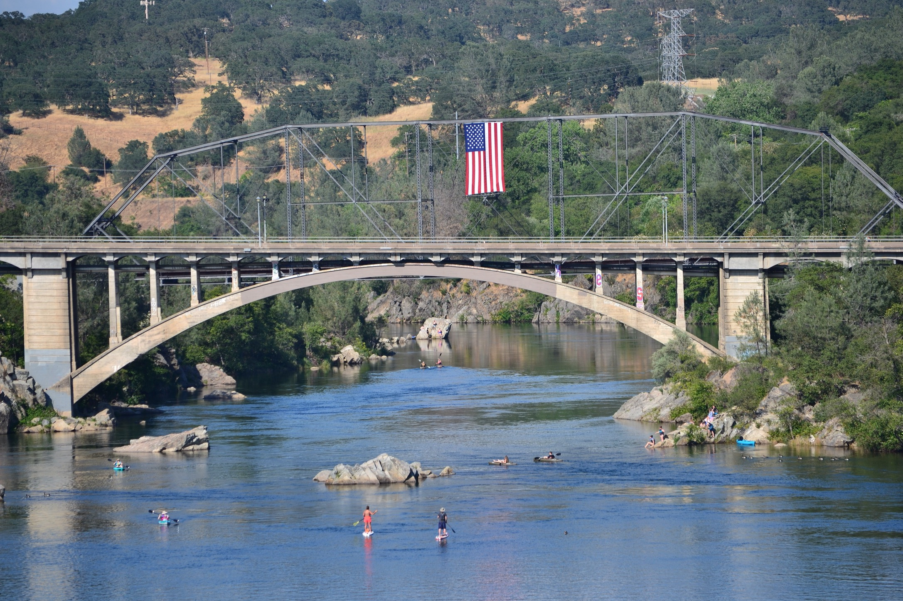

There are many uses for DevTools as a Developer, not limited to:
- debugging/troubleshooting
- inspecting and editing HTML/CSS
- optimization
Sample of a few methods to open DevTools:
- 3 dots > More tools > Developer Tools
- Right click > Inspect
- Select an element on page > Right click > Inspect
- Windows shortcut:
CTRL+Shift+I - Mac Shortcut:
CMD+Shift+I
Panels
- Elements: review and change HTML, CSS and DOM
- Sources: lists files that are opened for use in website
- CSS Overview: summary of CSS used and color contrast checker
- Lighthouse: check performance, accessibility, best practices and search engine optimization in mobile and desktop views
- Several other panels
American River
